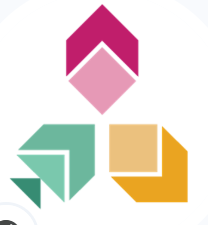

0 פעילויות מוצגות
🔍
לא נמצאו פעילויות
נסי לשנות פילטר או למחוק את החיפוש

מחלקת פדגוגיה דיגיטלית | האוניברסיטה הפתוחה
פעילויות לימודיות אינטראקטיביות שפותחו לשילוב בקורסים — מוכנות להטמעה ב-Moodle ובכל פלטפורמת למידה. כל פעילות מסווגת לפי תחום דעת, סוג האינטראקציה וגורם הפיתוח.